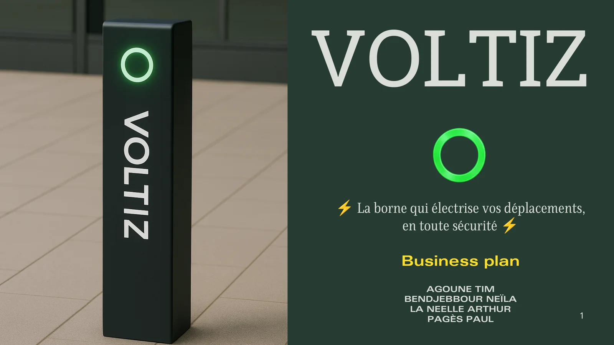
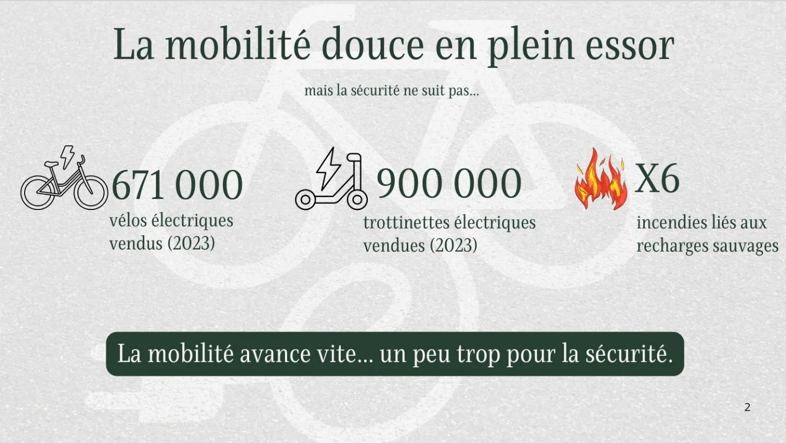
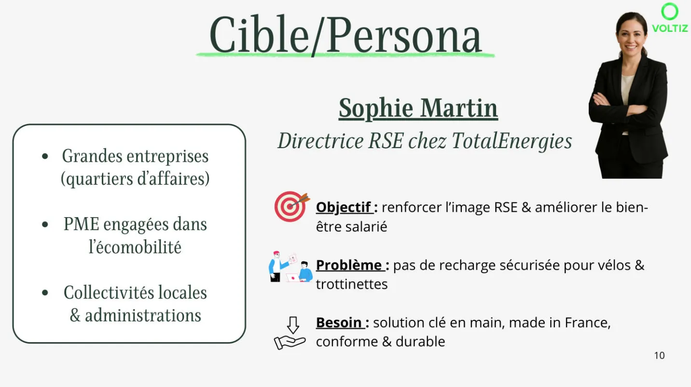
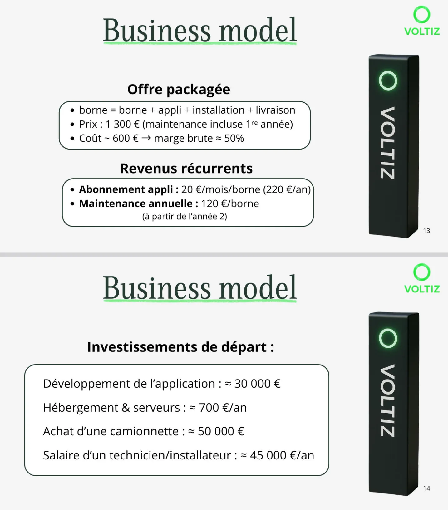
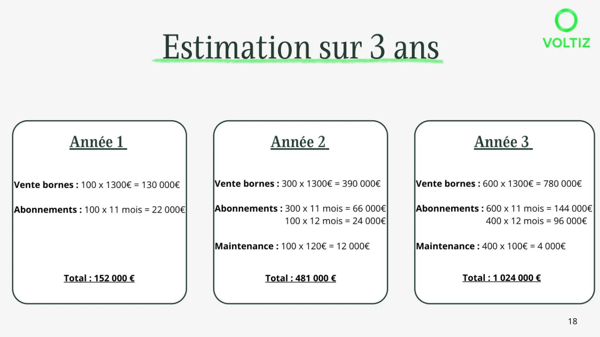

Tim Agoune
Tim Agoune01Objectif
Vivre un projet entrepreneurial complet : identifier un problème de marché, imaginer un produit qui y répond, et construire le projet étape par étape jusqu'à sa présentation devant un jury d'investisseurs.
02Démarche
Avec mon équipe, nous avons créé Voltiz, une borne de recharge sécurisée pour la mobilité douce, et construit le projet de A à Z : étude de marché, personas, création du produit et de la marque, business model et prévisions financières, jusqu'au pitch final avec une demande de financement devant un jury d'investisseurs. Ce projet regroupe tout ce que le portfolio présente séparément : le marketing (marché, personas, offre), le commercial (business model, négociation avec les investisseurs) et la communication (marque, visuels, pitch).





03Moyens et outils
- Études de marché sourcées ;
- méthodologie de personas ;
- modélisation financière : investissements de départ, marges, projections sur trois ans ;
- identité de marque et support de pitch conçu pour convaincre en quelques minutes.